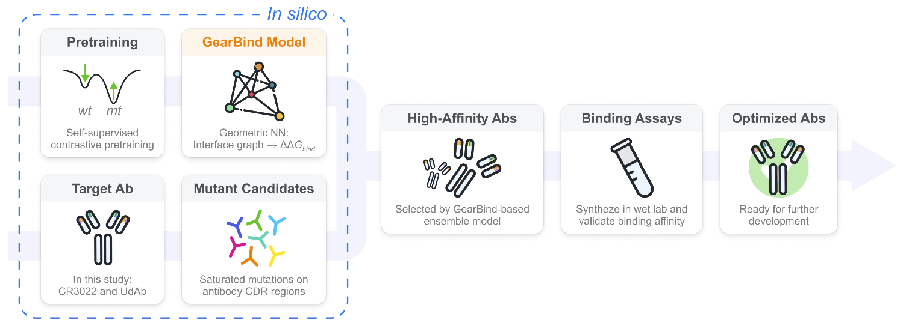

Huiyu CAI 蔡辉宇¶

I am a third-year PhD candidate at Mila - Quebec AI Institute and Department of Computer Science and Operations Research, University of Montreal, supervised by Prof. Jian Tang. I graduated from the Department of Machine Intelligence, Peking University as an Excellent Graduate in Beijing. I was previously a member of the Language Computing and Web Mining Group, led by Prof. Xiaojun Wan.
I am interested in deep generative models, geometric deep learning and their wide applications, such as biomolecular interaction modeling, drug discovery, single-cell data analysis, etc.
Feel free to reach out (links at webpage footer)!
Publications¶
2024¶

- GearBind: Pretrainable geometric graph neural network for antibody affinity maturation
Nature Communications, 2024
Huiyu Cai*, Zuobai Zhang*, Mingkai Wang*, Bozitao Zhong*, Quanxiao Li, Yuxuan Zhong, Yanling Wu, Tianlei Ying, Jian Tang *Equal contribution
2023¶
- E3Bind: An End-to-End Equivariant Network for Protein-Ligand Docking
ICLR, 2023
Yangtian Zhang*, Huiyu Cai*, Chence Shi, Jian Tang *Equal contribution
2022¶
- Neural Structured Prediction for Inductive Node Classification
ICLR, 2022 (oral)
Meng Qu, Huiyu Cai, Jian Tang *Equal contribution

- Structured Multi-task Learning for Molecular Property Prediction
AISTATS, 2022
Shengchao Liu, Meng Qu, Zuobai Zhang, Huiyu Cai, Jian Tang
2021 and before¶

- Learning interpretable cellular and gene signature embeddings from single-cell transcriptomic data
Nature Communications, 2021 code
Yifan Zhao*, Huiyu Cai*, Zuobai Zhang, Jian Tang, Yue Li
*Equal contribution

- Multi-Modal Sarcasm Detection in Twitter with Hierarchical Fusion Model
ACL, 2019 data
Yitao Cai, Huiyu Cai, Xiaojun Wan
Projects¶
- TorchDrug: A powerful and flexible machine learning platform for drug discovery (Nov. 2021 - now)
- Implementation of the EWLS Algorithm for the Maximum Clique Problem (Dec. 2020 - Jan. 2021)
- Music Source Separation: Theory and Applications (Apr. 2020 - Jun. 2020)
- Raiden Game Implementation in Java (Jan. 2020 - Jun. 2020)
- Fine-grained Face Manipulation via DLGAN (Oct. 2019 - Jan. 2020)
- Bird Sound Classification with CNN (Mar. 2019 - Jun. 2019)
- Mahjong AI Based on Deep Supervised Learning (Mar. 2019 - Jun. 2019)
- Rule-based Doudizhu & Ataxx & Reversi & pysc2-minimap AI (Oct. 2017 - May. 2019)